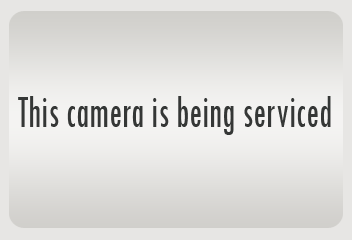

Q: The location of the camera on the map doesn't appear correct! What should I do?
A: Some of the camera locations are not exact. Try matching the camera feed with what you see on the street, or going to the intersection that appears above the camera feed
If you find that a camera is nowhere near its shown location (i.e., at a different street or address), please note the camera and send an email to selfienycwebsite@gmail.com
Q: The camera feed image isn't changing! Is the camera broken?
A: Be patient! Images are refreshed every second, but sometimes loading times can be slow. Wait a few seconds, and if the image does not change, try refreshing the page. If you can, try connecting to WiFi.
If the image still does not change, try checking back another day. Cameras go in and out of service regularly, but this website only updates every few days
Q: Why does an image sometimes appear saying the camera is being serviced?
A: Sometimes this image appears when the camera feed url cannot be reached. Wait a few seconds for the feed to refresh again, and the actual camera feed should appear!
If the image is not replaced with a view of the street within 10 seconds, the camera feed may be down for that day. Check back again at a later date to see if it's been updated!